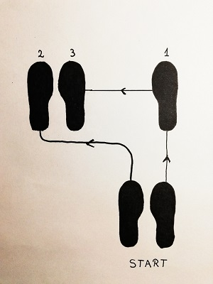
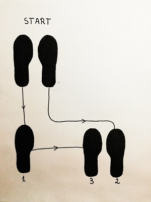
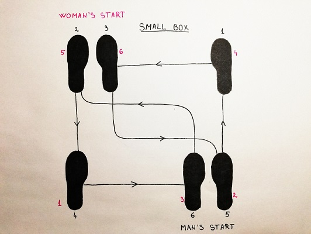
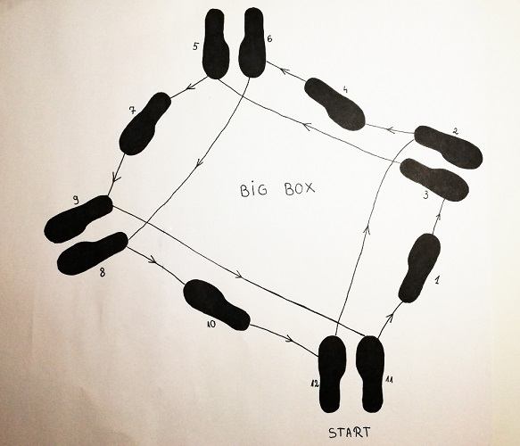

Waltz steps
Technique and styles
Waltz is a smooth dance, traveling around the line of dance. It is characterized primarily by its rise & fall action.
The shoulders move smoothly, parallel with the floor, not up and down.
The head should turn in the direction of the turn, otherwise the man's head is upright and looking over the right shoulder of the lady.
The American Waltz is similar to the International style except it has both open and closed dance positions. This allows the American style dancer a unique freedom of expression, including the ability to showcase character and theatrical presentation.
The slow waltz is danced to music written in 3/4 meter with 30 - 32 measures per minute.
Rise and Fall
The rise and fall is unique to the waltz. If possible, all the the steps in the waltz should be long.
On the first step forward, the weight is taken on the heel, then on to the ball of the foot.
A gradual rise to the toes should be started at the end of the first beat, and continued to the second and third beat of each bar of music.
Lower to the normal position at the end of the third beat by lowering to the heel of the foot which is carrying the weight.

Right foot change (forward)
Start position (facing line of dance)
Rhythm - One, two, three.

Left foot change (backwards)
Start position (backwards or against the line of dance)
Rhythm - One, two, three.
Waltz step right box (small box)
The basic waltz steps looks like a box on the floor. The basic step is called the Left Box. It is a combination of the Left Foot Change (forward) and the Right Foot change (backwards or against the line of dance)
The Box Step can also have a slight amount of turn, from 1/8 to 3/4 turn. The turn is used to turn corners or stay in a small area on a crowded nightclub dance floor.

Small box
Rhythm - One, two, three. One, two, three.
Practice!
After that, you are ready to try this:

Big box
Rhythm - One, two, three. One, two, three.